Protocol Proposals#
This document explains in detail the process followed by a team crosscutting Nomadic Labs, Trilitech and Functori for developing and submitting Protocol Proposals (hereafter called “the protocol team”), which are proposals for amending the Tezos economic protocol. This playbook covers more generally their whole lifecycle, including discovering and managing related issues.
Note
The processes documented here present the best practices followed by the protocol team. They are documented for improving predictability and reproducibility between protocol proposals submitted by this team, and for easing the onboarding of new members in this team, and possibly more largely in the Tezos ecosystem, by demystifying the protocol amendment process. These best practices may also be useful as inspiration for other proposers of protocol amendments, but they do not aim to provide any guidelines or standards.
Protocol Proposals are regularly submitted (non-exclusively) by the protocol team, typically every 3-4 months, to the on-chain governance – the bakers – who decide whether one of these Proposals will be activated on the mainnet and become the effective Protocol.
Activation of a Protocol Proposal involves a self-amendment of the mainnet Protocol through hot swapping. This requires baker infrastructure to be ready for a specific period – the Protocol programmatically decides the activation block once voted.
The life cycle of a successful Protocol Proposal unfolds as follows:
During any of these phases, issues may possibly be discovered. Handling such issues is covered by the different procedures described in section Issues and mitigations.
Developing a Protocol Proposal#
The development of a protocol proposal proceeds in different phases, and covers not only its code, but also other related artefacts such as documentation or testnets.
Proposed protocol code and public documentation#
The Protocol Proposal code consists of feature implementations that can be either ready to be activated or under a feature flag. The features that are ready for activation will be considered as part of the Protocol Proposal. It’s important to note that the code under feature flags will also be included in the Protocol Proposal code, even if it is unreachable under mainnet.
A feature is complete once fully implemented, documented, and validated. A feature is validated when the corresponding feature team has enough confidence in its implementation thanks to a validation process, usually designed with safety and security analysis, feature tests, and regression tests (and potentially external audits).
The Protocol Proposal must not introduce unbearable and unpredicted performance regressions during its activation or lifetime: it has to be validated against global and performance tests.
A Protocol Proposal is feature-complete when all its features are complete, and its whole code is validated by global performance testing.
A feature-complete Protocol Proposal may transit to the stabilization period, during which it undergoes additional testing cycles, including performance and manual testing, QA testing, integration testing by tool providers. During stabilization, the protocol documentation is improved and completed to cover all new features and changes.
During the development of a protocol proposal, feedback requests involve bakers, tooling providers, and other stakeholders to gather early input on the design and implementation of new features. These aim to reach a consensus on feature design as early in the development process as possible, avoiding delays in downstream support when features are eventually released.
It is especially important to bring onboard the developers from hardware wallets, web wallets, indexers to inform them of the new features and identify possible changes (specially breaking changes), arising from changes in the new proposal.
It is imperative that these tools are ready before the potential activation date of the new protocol proposal.
Under exceptional circumstances, particular inputs from the feedback loop might be taken into account during the protocol stabilization period. In this case:
The stabilization period is extended accordingly to allow gathering feedback and providing recommendations.
Changes originating from this process may be incorporated in the protocol proposal code, or may translate in a new variant to be submitted along the original proposal.
Modified proposals and/or new variants will also be subject to stablization.
During stabilization, the feature-complete Protocol Proposal lives in
proto-beta/, and changes can only be triggered by a bug fix, a QA or
performance improvement, or a decided change from a feedback loop.
Once stabilized, a feature-complete Protocol Proposal can be declared ready for release.
The code lives within the following directories under src/:
Before being feature-complete, the Protocol Proposal code is in
proto-alpha.A feature-complete Protocol Proposal code is in
proto-beta.A ready-for-release Protocol Proposal code is in
proto-<proposal name>.
Protocol Proposal testnet and hash#
The following testnets are used for protocol proposals:
Before being feature-complete, the Protocol Proposal (protocol Alpha) can be tested on
weeklynet.A feature-complete Protocol Proposal stabilization requires a dedicated testnet:
betanetis used for testing campaigns happening during stabilization. This testnet is shut down when the Proposal testnet starts.A ready-for-release Protocol Proposal testnet is
<proposal name>netand its start is announced within the Protocol Proposal release.
A testnet needs an Octez suite and a testnet configuration for running. An Octez suite needs a Protocol to activate hence a hash of the code of this Protocol.
Consequently:
A first hash of
proto-betais computed before entering into the stabilizationAt each upgrade of
proto-beta, it has to be rehashed so thatbetanetenables testing on the accurate ProposalFor each version of
proto-beta, a version of Octez, compatible withproto-beta, is released asoctez-beta
The stabilization period continues until the feature-complete Protocol Proposal code is ready for release.
Feature-completeness#
The objectives of this phase are:
assessing the set of features from
proto-alphathat are complete (with feature flag activated) to be part of a Protocol Proposalproducing all the artifacts required for entering the stabilization period:
a feature-complete Protocol Proposal in a dedicated directory called
proto-beta(using proto-betaN in case we need to stabilize several versions of proto-alpha with a different set of activated features) from proto-alphaIts initial hash and the initial
octez-betasuiteTestnet configuration for
betanet
Artifacts 1. and 2. are produced using the script scripts/proto_manager.sh by the protocol team (this script supersedes the older snapshot script by automating much more steps, for instance related to testing and CI). In case of breaking changes in the protocol, the script should be updated by its maintainers. If necessary, manual commits may be introduced in the Merge Request introducing the stabilized protocol. In any case, such changes should be taken into account and the script should be updated by its maintainers afterwards. Artifact 3 should be produced by the protocol team.
Two weeks before the feature-complete expected date, open a milestone (along the lines of another recent milestone titled “<X> Protocol Proposal is feature-complete”)
and open a dedicated channel <x>-protocol with the tech leads and managers for
each feature team and for release management, the Protocol
shepherd, the Head of Core Engineering and the testnets manager. Make
sure the proto_manager script is usable with the current state of
proto_alpha.
While the productions of both the proto-beta snapshot and octez-beta
are under the responsibility of the protocol team, Release Management must be
involved in their review and actual releases.
Stabilization#
The objectives of this phase are:
Stabilizing the feature-complete Protocol Proposal on
proto-betaPotentially adding decided changes triggered by feedback loops
Producing artifacts for the Protocol Proposal release:
Final hash
Compatible Octez suite
Testnet configuration for
proto-<proposal name>Technical description of the Protocol Proposal features
To plan the end of the stabilization period, open a milestone (along the lines of another recent milestone titled “<X> Protocol Proposal is release-ready”).
As with proto-beta and octez-beta, producing the final protocol
snapshot and its associated release candidate are under the
responsibility of the protocol team. Obviously, Release Management must
be involved in their review and actual releases.
Releasing a Protocol Proposal#
A Protocol Proposal consists of:
A hash of the proposed protocol code.
The proposed protocol public documentation.
An Octez suite release candidate that allows nodes, bakers, and accusers to support this Proposal.
A testnet.
Releasing a Protocol Proposal involves publishing these 4 elements in a blog post, on Agora and on company blogs. Make sure of the technical consistency of the blogpost content and social media package.
It is recommended to release a protocol proposal as early as possible during the first half of a Proposal period of the on-chain governance process, so as to allow bakers sufficient time to evaluate proposals and cast their votes.
For more details on the release phase, see:
Validation via on-chain governance#
Protocol Proposal proposition#
The on-chain governance of Tezos L1 consists of 5 consecutive periods of 5 cycles (~ 2 weeks):
Proposal period:
This is when the released Protocol Proposal is injected by a baker and submitted to the on-chain governance.
From potentially multiple proposals, bakers decide which is the only one to remain
Quorum: 5% of the stake
If no proposal reaches the quorum, we go back to a Proposal period
Exploration period:
Are the bakers happy with the one Protocol Proposal that wins the Proposal period
Or, it fails and we go back to a Proposal period
Quorum: For a proposal to be approved, the participation (yea, nay and pass votes) should be higher than the expected quorum (currently around 50%) and 80% of the casted votes (either yea or nay) should be yea votes
Cooldown (also called testing on some block explorers) period:
Supposedly readiness of the ecosystems, bakers’ discussions
no vote
Promotion period:
After whatever happens during the cooldown period, are bakers still happy with the Protocol Proposal under vote
Or, it fails and we go back to a Proposal period
Quorum: For a proposal to be approved, the participation (yea, nay and pass votes) should be higher than the expected quorum (currently around 50%) and 80% of the casted votes (either yea or nay) should be yea votes
Adoption period:
The Protocol Proposal will be activated in 5 cycles, the ecosystem is getting ready. This constitutes a hard deadline for critical tools (such as Tezos apps on hardware wallets, or major indexers and block explorers) to support the test protocol and be deployed, if not already so.
Activation#
Before Activation#
One Month Before Potential Activation
Test Network End of Life: announce the end of the previous test network. More precisely, announce that the test network for protocol
n-1will be stopped when (if) protocoln+1activates. This gives one month for users to migrate to the test network for protocolnorn+1.
A Few Days Before Activation
Reminder for bakers to upgrade.
The goal is to ensure that 3 first block proposers for the activation, the first new protocol block, and <P> second blocks are informed and have upgraded their infrastructure following the operation procedure for bakers.
Before Activation, the following are prepared
Communication launch: blog article, social media, news/press release preparation for succesful activation
Doc Update MR: A documentation update reflecting the new active protocol and droping the documentation of the previous protocol has to be ready. Technically, an MR instantiating meta-issue #2170 (Section “Protocol activation”) for the new protocol has to be ready and must have sufficient approvals to be triggered right after activation.
Activation time#
The activation of the Protocol Proposal happens at the end of the Adoption period.
Switching to the new protocol happens at the same time on the nodes in the network and requires a coordinated distributed deployment on every baker infrastructure (node, baker, accuser) – as we must have ⅔ + 1 of each block’s consensus committee up to date, to have a smooth activation we target the whole stake, and tolerate at least 85% of the stake – and nodes on the network need also to deploy Octez binaries that “understand” the new Protocol.
All the preparation before activation, even before release should have ensured that the activation is smooth. Hence pre-activation readiness data, monitoring, war room, snapshot to restore <O> states, and – most importantly — readiness to celebrate the success of the activation in the activation room.
After Activation#
A few hours after activation, when it is certain that everything has happened successfully, a blog post goes out to Agora and company blogs, and then a news release is sent out.
On the main tezos/tezos repository, on the
master branch, the proto_alpha directory is reset to the newly activated
protocol and its associated daemons, with the exception of vanity nonce and
migration that should be reverted.
Soon after the activation (preferably on the same or next day), the MR updating the documentation to reflect the new active protocol (see above) has to be merged. Also, part of the code related to the old protocol can now be dropped, see How to Freeze Protocols.
One month after the activation of protocol N, we deactivate the N-1 test network. (For example, the Babylon net was deactivated one month after Carthage went live on the main network.) This deactivation has been already announced one month before activation (see above).
Issues and mitigations#
Decision Tree in case of issues#
The following decision tree applies in case an issue has been found in an active protocol or a protocol proposal already submitted to on-chain governance, during any of the voting periods.
This decision tree is extended to the Tezos Layer 2 by a Solidarity Principle. This Solidarity Principle ensures that Layer 1 of the Tezos protocol extends its responsibility to enshrined Layer 2 components such as Etherlink. In practice, this means that if an issue arises in these components that can be resolved or mitigated by actions at the Layer 1 level, the protocol team will help the Layer 2 team with the same level of commitment as if the issue were within Layer 1 itself. This principle aims to strengthen trust in Layer 2 and other enshrined components by guaranteeing not only their security through Layer 1 but also the commitment of Layer 1 to support and safeguard their operation when necessary.
Attention
To enable a user activated action, more than 2/3rd of the stake has to trigger it. Thus one must ensure a large majority of the stake has been upgraded.
User-Activated Actions#
UAPO: User-Activated Protocol Override#
The process to amend a Protocol Proposal under the governance voting process.
In the following, we denoted <P> the Protocol Proposal that needs to be UAPOed.
The patched
<P>Protocol Proposal should be done and validatedIf it does not create an attack vector, a public MR that is targeting alpha and has no relation to <P> nor mentions any issue should be ready to be merged ASAP
A snapshot and a hash for the patched <P> Protocol are prepared with the release manager
Migration tests, monitoring, etc should be ready
The comm must be ready
Then a public merge of the patched <P> Protocol on
masteroftezos/tezos(this will be public and demand comms to be ready), this MR should include the necessary code for the UAPO in the Octez shell (which would have already been produced to test the migration anyway)Form then a (quick) release of Octez with the UAPO and everything can go back to the usual business
Note
<P>net must be upgraded and the tool providers might need some time to update their tools.Ensure with bakers that a large majority of the stake has been upgraded.
In terms of communication, we favor transparency.
UAU: User-Activated Upgrade#
Process to amend the active protocol, to be avoided as much as possible (particularly on Mainnet), and only occur in an extreme emergency.
The patched
<P>Protocol Proposal should be done and validated.A beta-like protocol is prepared using the same tools used to produce a stabilized protocol.
This protocol is patched to include the necessary fixes
It is tested accordingly
It is snapshotted into a new
proto-<proto name>protocolThe shell is updated to produce the automatic upgrade at a decided block (preferably the last block of a cycle).
Communication must be ready
Then, a public merge of the patched <P> protocol on master including the Octez shell changes
A (quick) release of Octez with the UAU
Note
<P>net must be upgraded and the tool providers might need some time to update their tools.Ensure with bakers that a large majority of the stake has been upgraded.
In terms of communication, we favor transparency.
UAAC: User-Activated Activation Cancelation#
The process to cancel a Protocol Activation at the end of the governance voting process.
Prepare a configuration with the UAAC
Optionally: prepare an Octez release hardcoding the UAAC
KO: Cancel organically#
This process consists in transparently provide information on the issue and leave the decision in bakers’ hands to reject (or not) the proposal using the governance process.